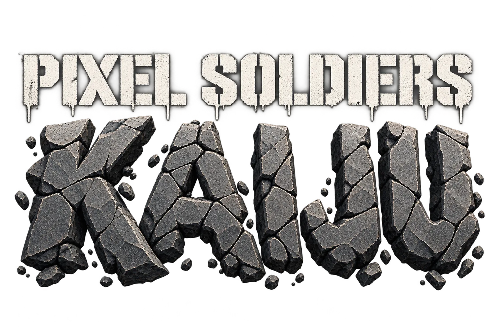
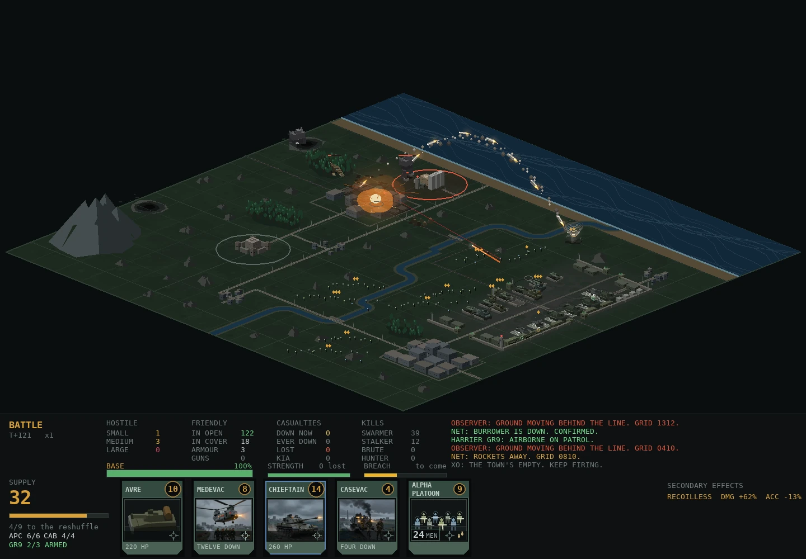
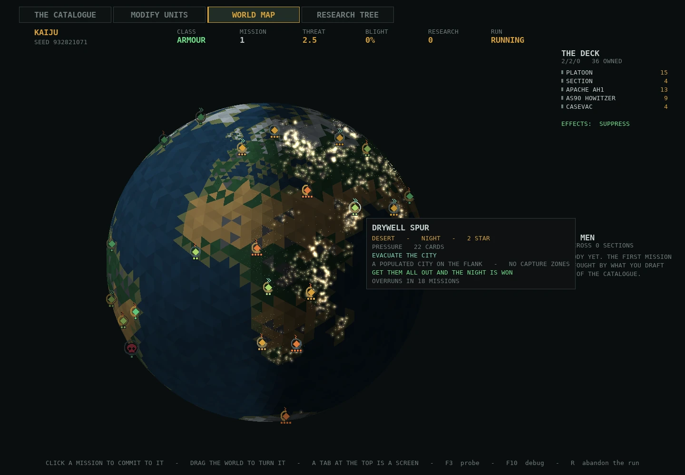
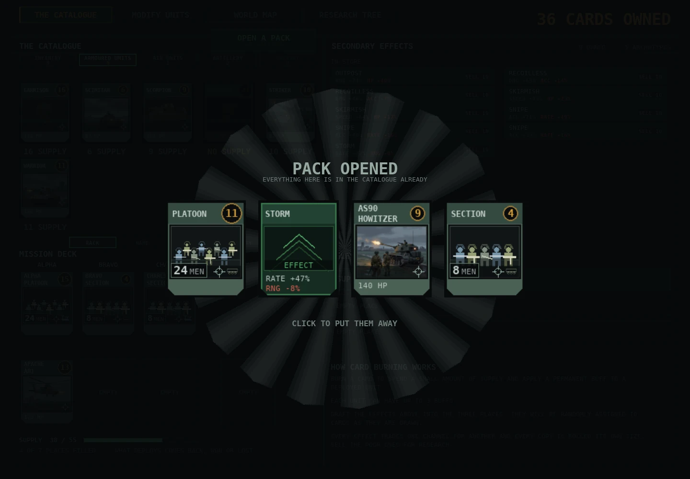
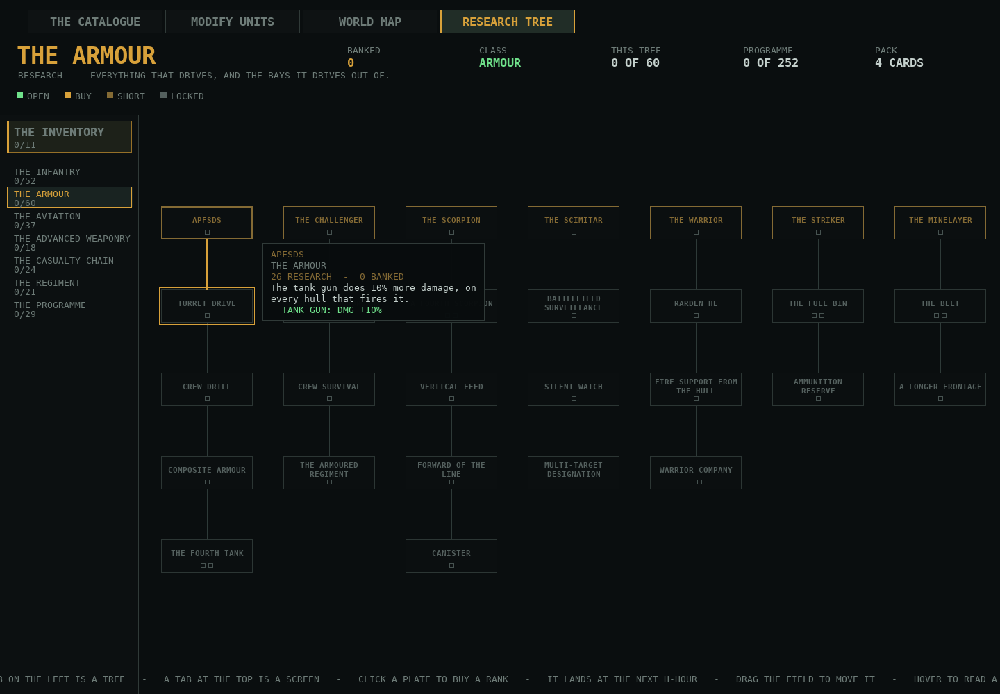
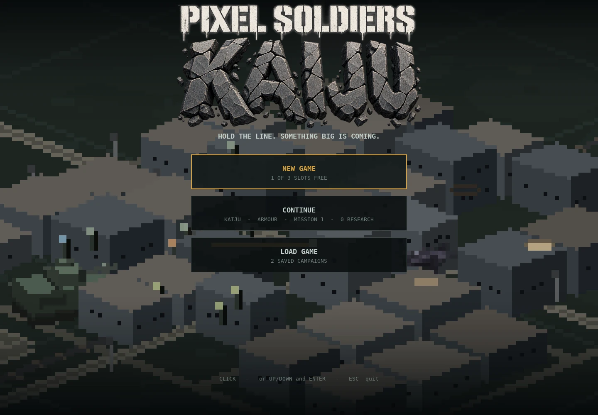

Pixel Soldiers: Kaiju
A tactical roguelite about holding the planet together while it comes apart.
The fight
You command an Army detachment — infantry sections, tanks, artillery lines, engineers, air sorties, mechs carrying seismic weapons — against monsters that swarm out of rifts in the ground. Each mission you pick a node on a churning globe and fight for it in real time: close the rift, evacuate a city, capture a strategic position, or simply survive until sunrise.
The board
Any node on the board can be taken at any time. A harder node means a harder fight, and losing that fight costs you the ground, not the run. What you’re racing is the blight, which spreads across the world map whether or not you’re winning.
Between missions
Between missions you build the force you’ll carry forward: a deck of army cards to take into battle, drawn from a catalogue of everything you own, and a research tree running to hundreds of nodes across eighteen branches.
What it looks like
-

A mission in progress. -

Picking the next node. -

Opening a pack of army cards. -

One branch of the research tree. -

The title screen.
Where it is
In development, by one person, with no announced date. When there is something worth showing, it will show up here first.
Get in touch